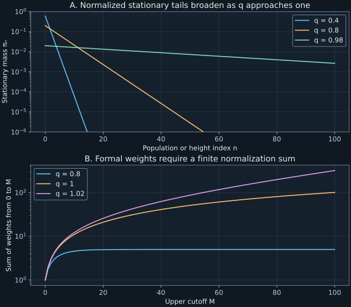

Chapter 8 · Lecture10
Stationary populations, fluctuations, and physical balance
A population model produces positive stationary weights, but their sum diverges. Dividing by a finite numerical cutoff makes a plausible histogram whose mean changes whenever the cutoff changes. The task is to decide whether a rate model has an actual equilibrium probability, and then distinguish that equilibrium from a transient that merely has the same mean. Sedimentation, reservoir chemistry, and a thermal oscillator make the normalization test physically concrete.
Lecture10 develops reflecting boundaries, stationary products, sedimentation, chemical and radiation examples, affine-rate moments, and an introduction to continuous-state master equations. The full caption track was read. The explicit immigration-death transient law, normalization diagnostics, and branching qualifications below extend the recorded calculations.
8.1 A stationary product is a probability only after normalization L10 9:04
Consider a birth-death process on the nonnegative integers with rates $\lambda_n$ from $n$ to $n+1$ and $\delta_n$ from $n$ to $n-1$, with $\delta_0=0$. Assume all neighbor rates are positive where the corresponding edge exists, and assume a nonexplosive process. For a stationary candidate $\pi_n$, define the upward probability current $J_n=\lambda_n\pi_n-\delta_{n+1}\pi_{n+1}$. At an interior state, the stationary equation says $J_{n-1}-J_n=0$.
The reflecting lower boundary gives $0=\delta_1\pi_1-\lambda_0\pi_0=-J_0$. Therefore every $J_n$ is zero. Unlike a ring, a reflecting line has no route for a stationary circulation; stationarity here forces neighbor detailed balance. Successive probability ratios are fixed by $\pi_{n+1}/\pi_n=\lambda_n/\delta_{n+1}$.
Zero current fixes $\pi_1$ from $\pi_0$, then $\pi_2$ from $\pi_1$, and inductively $\pi_n=w_n\pi_0$. Positivity follows from the rate ratios. The sum can be one exactly when finite $Z$ permits $\pi_0=1/Z$. Conversely these values satisfy every neighbor detailed-balance identity and the lower-boundary equation.
To establish invariance, consider a trajectory with finitely many jumps during a fixed time interval, weighted by the initial probability of its starting state. Its path density is that initial weight times the product of transition rates along its jumps and the exponential survival factors during every holding interval, including the final interval. Reverse the order of its states, jumps, and holding intervals. Neighbor detailed balance makes the initial-weight-times-rate-product identical in the two directions: each adjacent probability ratio cancels the next one. The holding factors are unchanged because the same durations are spent in the same states. Integration over jump times and summation over finite paths therefore gives the transition-kernel detailed-balance identity.
Nonexplosion makes these finite-jump paths exhaust the transition probability. For a fixed terminal state, sum the kernel identity over all starting states. The reversed transition probabilities sum to one by conservativeness, leaving exactly the stationary weight of that terminal state. Thus the normalized weights are invariant. All path contributions are nonnegative, so these sums require no unjustified cancellation of infinite signed series. Both normalization and the process hypothesis are essential. ∎
On a finite range $0,\ldots,M$, reflecting at the upper endpoint requires $\lambda_M=0$, and the normalizer ends at $M$. This finite model always has a finite sum of positive weights. It is not evidence that the corresponding infinite model normalizes. Figure8.1 displays the difference between convergence of partial sums and an arbitrary truncation.
8.2 A reflecting floor turns downward bias into an exponential profile L10 15:09
Let height be $z_n=n\ell$ with spacing $\ell\gt0$, and take constant upward rate $u\gt0$ and downward rate $d\gt u$ away from a reflecting floor. The ratio is $q=u/d\in(0,1)$, so (8.1) becomes $\pi_n=(1-q)q^n$. Its mean height is $\ell q/(1-q)$ and its most probable height is zero. A mode at the floor does not put all probability there; the full distribution balances random kicks with downward bias.
At equal rates $q=1$, every weight is one and the infinite normalizer diverges. For $q\gt1$ it diverges faster. In a finite reflecting column either case has a stationary law, but that law depends on the upper boundary. Removing the ceiling changes the normalization problem.
For thermal equilibrium under a constant downward force of magnitude $F\gt0$, a sufficient neighbor balance condition is $u/d=\exp[-F\ell/(k_BT)]$. Here $T$ is temperature and $k_B$ Boltzmann's constant, so $F\ell$ and $k_BT$ are energies. Let $H=k_BT/F$, a length. Taking $\ell\downarrow0$ gives
$$\frac{\pi_n}{\ell}\longrightarrow\rho(z)=\frac1H e^{-z/H},\qquad z\geq0.\tag{8.2}$$The limit follows from $q=e^{-\ell/H}$ and $(1-q)/\ell\to1/H$. The limiting density has mean $H$ and mode zero. This is a scale height, not a finite outer edge of an atmosphere. Applying it to a gas assumes isothermal equilibrium, approximately constant gravity, and a suitable independent-particle description over the considered heights.
The same profile arises from constant mobility $M$ and diffusion coefficient $D$ if the downward drift speed is $MF$ and the fluctuation-dissipation relation is $D=Mk_BT$. Their ratio gives $D/(MF)=H$; viscous mobility cancels from equilibrium while governing relaxation speed. For a slowly sedimenting isolated sphere in a viscous fluid, Stokes drag is one possible mobility model, but its force must include buoyancy and its low-Reynolds-number assumptions. The equilibrium ratio itself does not require importing that hydrodynamic approximation.
8.3 A maintained reservoir produces a Poisson population L10 29:03
Consider conversion $A\rightleftarrows B$ while a large maintained reservoir holds the available number of $A$ approximately fixed. Let $N$ count product molecules $B$. Constant input gives $\lambda_n=a\gt0$, and independent first-order removal of each $B$ gives $\delta_n=bn$ with $b\gt0$. The parameter $a$ has count-per-time units in the physical description and a numerical inverse-time rate on count states; $b$ is the per-molecule inverse-time rate.
The stationary weights are $w_n=(a/b)^n/n!$. Summing the exponential series gives $Z=e^{a/b}$, so $\pi_n=e^{-a/b}(a/b)^n/n!$. The mean and variance both equal $\mu=a/b$. Reservoir maintenance is the physical idealization that makes creation independent of the present product count.
A closed system with a fixed total of $M$ molecules is different. Forward creation then scales with the remaining $A$ count: $\lambda_n=k(M-n)$, while reverse loss is $\delta_n=k'n$. Substitution into (8.1) gives binomial weights and a finite binomial equilibrium with success parameter $k/(k+k')$. A Poisson reservoir limit requires appropriate large-reservoir scaling; it is not the exact equilibrium of every reversible chemical conversion.
8.4 Stimulated transitions give geometric oscillator occupation L10 32:51
For a quantum oscillator with equally spaced excitation energies $E_n=n\varepsilon$, $\varepsilon\gt0$, use upward rates $\lambda_n=A(n+1)$ and downward rates $\delta_n=Bn$, with $A\geq0$ and $B\gt A$. These are an assumed effective weak-coupling occupation model; deriving their quantum transition matrix elements is outside the present scalar jump calculation. The factor $n+1$ permits excitation out of the ground state, while the death rate vanishes at zero.
The ratio $\lambda_n/\delta_{n+1}=A/B=q$ cancels the neighboring occupation factor. Thus $\pi_n=(1-q)q^n$, with mean $q/(1-q)=A/(B-A)$. For thermal equilibrium, neighbor detailed balance requires $q=\exp[-\varepsilon/(k_BT)]$, giving mean $1/[\exp(\varepsilon/(k_BT))-1]$ and variance $\mu(1+\mu)$. This reproduces the single-mode equilibrium law from chapter1 through rates instead of direct canonical weighting.
The exponential must have the negative energy sign: a positive sign would make $q\gt1$ and destroy normalization at positive temperature. Nor does a geometric stationary distribution alone prove that a bath is thermal; a nonthermal effective rate model with the same ratio would give the same occupation histogram. Observables beyond one-time occupation may be needed to distinguish mechanisms.
8.5 Immigration-death transients separate surviving ancestors from new arrivals L10 5:03
Return to $\lambda_n=a$, $\delta_n=bn$, starting from a deterministic population $n_0$. Put $q_t=e^{-bt}$ and $\mu=a/b$. Each initial molecule independently survives to time $t$ with probability $q_t$, so surviving ancestors have a binomial law with parameters $n_0,q_t$. An immigrant arriving at time $s$ survives with probability $e^{-b(t-s)}$. Independent thinning of the Poisson immigration stream leaves a Poisson number of surviving immigrants with mean $a\int_0^t e^{-b(t-s)}ds=\mu(1-q_t)$.
The two contributions are independent because their underlying initial lifetimes and immigration events are independent. Consequently the exact population is a binomial-plus-Poisson sum. Its probability-generating function is
$$G(z,t)=[1-q_t+q_tz]^{n_0}\exp[\mu(1-q_t)(z-1)].\tag{8.3}$$This constructs the full transient law and checks normalization at $z=1$. It also establishes nonexplosion: up to any finite time there are finitely many Poisson immigrants, and deaths cannot exceed initial population plus total arrivals.
Add the independent binomial and Poisson means and variances from (8.3). Equivalently, the moment identities of chapter7 give $m'=a-bm$ and $V'=a+bm-2bV$, with $m(0)=n_0,V(0)=0$. Substitution of (8.4) verifies both equations and initial conditions. ∎
Even if $n_0=\mu$ is an integer, the deterministic initial population is not the stationary Poisson ensemble. The mean then stays constant, but $V(t)=\mu(1-q_t^2)$ rises from zero. This is a direct example where a constant measured mean hides a nonstationary fluctuation law. At $n_0=12,a=3,b=1,t=2$, exact mean and variance are 4.218017549 and 3.998229882.
8.6 Linear births and deaths expose separate growth and noise rates L10 36:52
A branching population instead has $\lambda_n=an$ and $\delta_n=bn$, with $a,b\geq0$. Zero is absorbing: without immigration an extinct population cannot restart. For a deterministic positive initial population $n_0$, define growth rate $r=a-b$. The first two moment equations give $m'=rm$ and $V'=2rV+(a+b)m$. Solving gives
$$m(t)=n_0e^{rt},\qquad V(t)=\begin{cases}n_0\dfrac{a+b}{r}e^{rt}(e^{rt}-1),&r\ne0,\\2an_0t,&a=b.\end{cases}\tag{8.5}$$For $r\ne0$, multiply the variance equation by $e^{-2rt}$ and integrate its forcing $(a+b)n_0e^{-rt}$; this gives (8.5). The critical result is its continuous limit as $r\to0$, with $a+b\to2a$. The mean measures the difference of birth and death rates, while noise growth measures their sum. At $a=0.7,b=0.4,n_0=2,t=2$, mean and variance are 3.644237601 and 10.985319564.
Exponential growth of the mean is not finite-time explosion, and it does not preclude extinction. Linear rates are nonexplosive by domination of births by a pure-birth process with per-capita rate $a$ and by the finite number of possible deaths before any fixed birth count. At $a=b\gt0$, the mean remains $n_0$ while variance grows linearly. Extinction and survival-conditioned statistics explain why an ensemble mean can remain finite even as many individual trajectories vanish. The absorbing point mass at zero is always a stationary law; the irreducible positive-rate assumptions of Proposition8.1 do not apply across that absorbing boundary.
8.7 A continuous state can still make discrete jumps L10 45:22
A state coordinate can vary continuously even when a path changes by jumps. Let $\rho(x,t)$ be a probability density and $w(y\mid x)dy$ the transition rate from present $x$ into a neighborhood of $y$. Its units are inverse time per output-coordinate unit. With finite total exit rates and the required integrability, summing gain and loss over all source states gives
$$\partial_t\rho(x,t)=\int [w(x\mid y)\rho(y,t)-w(y\mid x)\rho(x,t)]dy.\tag{8.6}$$The double integral cancels under an interchange justified by integrability, preserving total probability. The conditional initial state $x_0$ is a delta measure, not an ordinary initial density. A continuous state space therefore does not automatically imply continuous sample paths or a second-order diffusion equation. Chapter9 derives the local diffusion approximation and its boundary conditions from this gain-loss structure.
8.8 Laboratory: test normalization before simulating equilibrium
The program computes stationary weights by neighbor ratios, compares them with a Poisson mass function, and evaluates the exact transient convolution (8.3). It separately generates 40,000 event-driven immigration-death trajectories with seed202611088. At each event, the total rate is $a+bn$; an independent mark chooses birth with probability $a/(a+bn)$, otherwise death. The zero-state death probability is zero automatically.
Immigration-death mean: exact=4.218017549, sample=4.219325000 Immigration-death variance: exact=3.998229882, sample=3.997671544 Stationary mean=variance=3.000000 Linear branching mean=3.644237601, variance=10.985319564
Run python code/ch08_equilibrium.py with the shared dependencies. It writes JSON and text beside the script and makes no network calls. Exact-grid normalization and moments test the convolution; the sample-mean check uses six analytical standard errors. The branching values are exact-formula evaluations, rather than outcomes of the immigration-death simulation.

This short check implements the stationary ratio test in a parameter range where the geometric series is known exactly. It accepts a ratio, returns a mean when normalized, and refuses the divergent cases rather than silently truncating them:
def stationary_geometric_mean(ratio):
if not 0 <= ratio < 1:
raise ValueError("infinite geometric weights do not normalize")
return ratio/(1-ratio)
for ratio in (0.4, 0.8, 0.98):
print(f"q={ratio}: mean={stationary_geometric_mean(ratio):.6f}")q=0.4: mean=0.666667 q=0.8: mean=4.000000 q=0.98: mean=49.000000
A positive finite sum at a numerical cutoff proves nothing about the infinite normalizer without a tail argument. For general rate products, ratios or logarithmic weights can guide a convergence test, but a borderline limit of one needs more information. Simulating a finite reflecting truncation also cannot by itself establish equilibrium of the infinite chain.
8.9 Equilibrium existence, relaxation, and extinction are separate questions
The product formula gives a stationary probability under explicit normalizability and process assumptions. Thermal rate ratios explain Boltzmann weights; reservoir assumptions explain Poisson populations; stimulated oscillator rates explain geometric occupation. The same probability law can arise from several mechanisms, so the physical interpretation requires the rate model as well as the histogram.
Time to approach that law depends on rate magnitudes, which cancel from many equilibrium ratios. Absorbing boundaries can support stationary extinction instead of a positive fluctuating population. A closed chemical system, a maintained reservoir, a killed process, and a reflecting truncation have different state spaces and boundary fluxes. Declaring the boundary is part of declaring the process.
8.10 Exercises with worked solutions
Exercise8.1 — A normalized truncation can mislead (conceptual)
At equal upward and downward rates on a reflecting finite chain $0,\ldots,M$, find the stationary law and mean. What happens as the ceiling is removed?
Worked solution
Every neighbor ratio is one, so all weights equal one and $\pi_n=1/(M+1)$. Symmetry or summation gives mean $M/2$. At each fixed state the mass tends to zero as $M\to\infty$, and the mean diverges. The limiting zero sequence is not a probability distribution. Finite reflecting normalization therefore does not create an infinite half-line equilibrium at ratio one. The upper boundary supplies confinement that disappears in the limit.
Exercise8.2 — A constant mean can conceal equilibration (conceptual)
For immigration-death with integer $\mu=a/b$, start at exactly $N(0)=\mu$. Compare its mean and variance with a process initialized from the stationary Poisson law.
Worked solution
The deterministic initialization gives mean $\mu$ at every time and variance $\mu(1-e^{-2bt})$ from (8.4). The stationary initialization has both mean and variance $\mu$ at every time. The former's zero initial variance is enough to disprove stationarity despite its constant mean. For a random initial variance $V_0$, independent thinning adds a term $q_t^2V_0$ to the deterministic-initial variance formula with the same mean. Taking $V_0=\mu$ cancels the transient deficit exactly.
Exercise8.3 — Thermal ratios and degeneracy (derive)
Suppose each energy level $E_n$ has one state and neighbor rate ratio is $\exp[-(E_{n+1}-E_n)/(k_BT)]$. Derive its stationary weights. How would a specified degeneracy $g_n$ modify a level probability?
Worked solution
Multiplying neighbor ratios telescopes the energy differences: $w_n=\exp[-(E_n-E_0)/(k_BT)]$. Normalization gives weights proportional to $\exp[-E_n/(k_BT)]$ when the partition sum is finite. If a level contains $g_n$ distinct equally weighted microstates, its aggregate probability is proportional to $g_n\exp[-E_n/(k_BT)]$. A coarse level-rate model must then have ratio $\lambda_n/\delta_{n+1}=(g_{n+1}/g_n)\exp[-(E_{n+1}-E_n)/(k_BT)]$ to reproduce that level law. Degeneracy is a state-counting factor; it cannot be added to a transition model without checking the resulting ratios.
Exercise8.4 — Critical branching variance (derive)
For per-capita birth and death rates both $a\gt0$, derive mean and variance from the generator. Explain why a constant mean does not describe deterministic population conservation.
Worked solution
The drift $\lambda_n-\delta_n$ vanishes, so $m'=0$ and $m=n_0$. The second moment equation becomes $d\mathbb E[N^2]/dt=2a\mathbb E[N]=2an_0$, since the quadratic drift terms cancel but birth and death noise add. Subtracting the constant squared mean gives $V(t)=2an_0t$. Individual jumps change the population; only the ensemble drift cancels. This is not a fixed-total conservation law, which would force variance zero for a deterministic initial total.
Exercise8.5 — Infer two rates from drift and noise (compute/design)
A branching model has initial deterministic population ten, initial mean derivative three per second, and initial variance derivative eleven per second. Infer its per-capita birth and death rates. State the model-dependent assumption behind the inference.
Worked solution
At zero time, $m'=(a-b)10=3$ and $V'=(a+b)10=11$, because $V(0)=0$. Thus $a-b=0.3$ and $a+b=1.1$, yielding $a=0.7,b=0.4$ per second. Mean evolution alone would give only their difference. The inference assumes independent one-at-a-time births and deaths with rates proportional to the current count, a deterministic initial population, and accurately measured derivatives. Immigration, batch births, correlated events, or initial variance would change the equations and can invalidate this identification.
Exercise8.6 — Choose the correct chemical equilibrium (compute/design)
A closed conversion system has total population twenty and equal forward and reverse per-molecule rates. Compare its stationary product-count mean and variance with an immigration-death reservoir model fitted to the same mean.
Worked solution
The closed system has binomial equilibrium with $M=20,p=1/2$, so mean ten and variance five. A reservoir model with $a/b=10$ has Poisson equilibrium with mean and variance ten. Their means agree but the closed system's fixed total suppresses variance and caps the count at twenty. Checking the Fano factor gives one half versus one; checking support supplies another distinction. The rates, boundary at twenty, and reservoir maintenance must therefore be specified before an equilibrium histogram is interpreted.
8.11 Sources and attribution
- V. Balakrishnan, lecture10, IIT Madras, NPTEL115106089; official instructor notes, PDF65–68: stationary products, sedimentation, chemical reservoir, oscillator, and continuous-state opening. The recording supplies the branching moment discussion.
- The generating-function, thinning, and independent-sum results used in (8.3) are derived in chapter1 and chapter6; this chapter applies them to an explicitly constructed transient.
Scale height is distinguished from total atmospheric extent. The oscillator equilibrium ratio uses a negative energy exponent, correcting the positive sign printed in the official PDF66. Exact-formula evaluations and seeded simulation are separate evidence classes. No experimental rate measurements are claimed.